Repositório GitHub: github.com/empt4
|
Observação sobre o salvamento das imagens no WSL: Durante a execução dos exercícios no ambiente WSL (Ubuntu no Windows), identifiquei um bug na interface gráfica das janelas do OpenCV: sempre que eu clicava no ícone de disquete para salvar a imagem diretamente pela tela da janela ( |
1. Exemplo Inicial: Hello OpenCV
Realizei este teste inicial para validar o ambiente de compilação com CMake e OpenCV no WSL, carregando uma imagem e convertendo-a para tons de cinza.
#include <iostream>
#include <opencv2/opencv.hpp>
int main(int argc, char** argv) {
cv::Mat image;
image = cv::imread(argv[1], cv::IMREAD_GRAYSCALE);
if (!image.data) {
std::cout << "nao abriu " << argv[1] << std::endl;
}
std::cout << "tamanho: " << image.rows << "x" << image.cols << std::endl;
cv::imshow("image", image);
cv::waitKey();
return 0;
}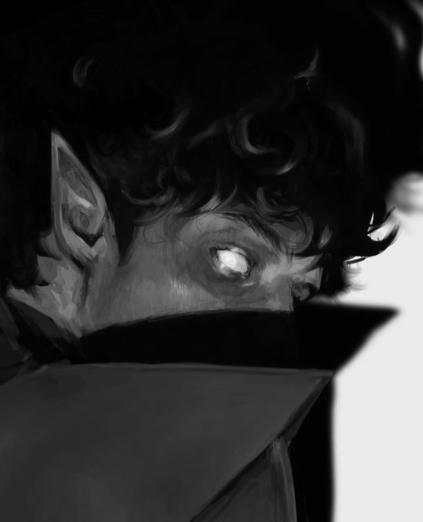
2. Capítulo 2: Manipulando Pixels em uma Imagem
Neste capítulo, trabalhei com o acesso direto aos valores dos pixels na estrutura cv::Mat. No programa regions.cpp, fiz a leitura de duas coordenadas informadas pelo usuário para delimitar um retângulo e apliquei o efeito negativo dentro dessa área subtraindo o valor atual de 255. Já no programa trocaregioes.cpp, dividi a imagem em quatro quadrantes iguais usando cv::Rect e troquei os quadrantes das diagonais de posição.
#include <iostream>
#include <opencv2/opencv.hpp>
#include <algorithm> //necessário para std::min e std::max
int main(int argc, char** argv) {
// Carrega a imagem em tons de cinza
cv::Mat image = cv::imread("noturno_icon.jpg", cv::IMREAD_GRAYSCALE);
if (!image.data) {
std::cout << "erro" << std::endl;
return -1;
}
int x1, y1, x2, y2;
std::cout << "Dimensões da imagem: " << image.cols << "x" << image.rows << "\n";
std::cout << "Digite a coordenada X do Ponto 1: "; std::cin >> x1;
std::cout << "Digite a coordenada Y do Ponto 1: "; std::cin >> y1;
std::cout << "Digite a coordenada X do Ponto 2: "; std::cin >> x2;
std::cout << "Digite a coordenada Y do Ponto 2: "; std::cin >> y2;
//tratamento de segurança: garante que o retângulo fique dentro dos limites da imagem e organiza qual é o ponto inicial e final
int startX = std::max(0, std::min(x1, x2));
int endX = std::min(image.cols, std::max(x1, x2));
int startY = std::max(0, std::min(y1, y2));
int endY = std::min(image.rows, std::max(y1, y2));
//aplica o efeito negativo (255 - pixel atual) na região demarcada
for (int i = startY; i < endY; i++) {
for (int j = startX; j < endX; j++) {
image.at<uchar>(i, j) = 255 - image.at<uchar>(i, j);
}
}
cv::imshow("Efeito Regioes - Negativo", image);
cv::waitKey();
return 0;
}#include <iostream>
#include <opencv2/opencv.hpp>
int main(int argc, char** argv) {
cv::Mat image = cv::imread("noturno_icon.jpg", cv::IMREAD_GRAYSCALE);
if (!image.data) {
std::cout << "erro" << std::endl;
return -1;
}
//calcula os pontos médios
int midX = image.cols / 2;
int midY = image.rows / 2;
//define as 4 Regiões de Interesse
cv::Rect rect_TL(0, 0, midX, midY); //superior esquerdo
cv::Rect rect_TR(midX, 0, midX, midY); //superior direito
cv::Rect rect_BL(0, midY, midX, midY); //inferior esquerdo
cv::Rect rect_BR(midX, midY, midX, midY); //inferior direito
//cria cabeçalhos que apontam para as regiões da imagem original
cv::Mat TL = image(rect_TL);
cv::Mat TR = image(rect_TR);
cv::Mat BL = image(rect_BL);
cv::Mat BR = image(rect_BR);
cv::Mat temp; //matriz para auxiliar na troca
//troca os quadrantes diagonais: superior esquerdo com inferior direito
TL.copyTo(temp);
BR.copyTo(TL);
temp.copyTo(BR);
//troca os quadrantes diagonais: superior direito com inferior esquerdo
TR.copyTo(temp);
BL.copyTo(TR);
temp.copyTo(BL);
cv::imshow("Troca de Regioes", image);
cv::waitKey();
return 0;
}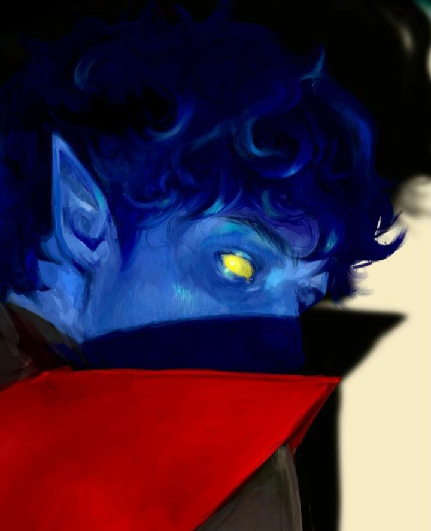
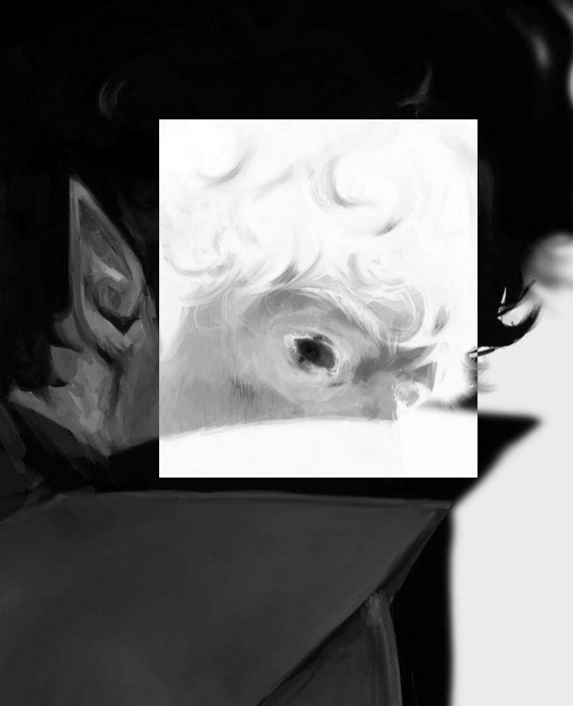
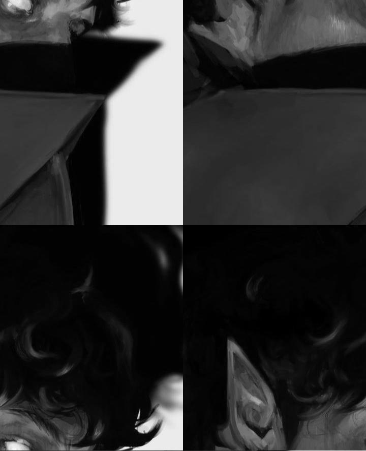
3. Capítulo 3: Tratando Arquivos de Vídeo
Para este exercício, utilizei a classe cv::VideoCapture para abrir um arquivo de vídeo (video.mp4), ler os quadros em um laço de repetição e aplicar duas transformações separadas: uma convertendo o vídeo para tons de cinza (video_cinza.cpp) e outra invertendo as cores dos frames para negativo (video_negativo.cpp), salvando o resultado final.
#include <iostream>
#include <opencv2/opencv.hpp>
int main(int argc, char** argv) {
if (argc < 2) {
std::cout << "Uso: ./video_cinza <caminho_do_video>" << std::endl;
return -1;
}
cv::VideoCapture cap(argv[1]);
if (!cap.isOpened()) return -1;
int width = cap.get(cv::CAP_PROP_FRAME_WIDTH);
int height = cap.get(cv::CAP_PROP_FRAME_HEIGHT);
int type = cap.get(cv::CAP_PROP_FOURCC);
double fps = cap.get(cv::CAP_PROP_FPS);
cv::Size frameSize(width, height);
//'false' indica que a gravação será em tons de cinza (1 canal)
cv::VideoWriter out("saida_cinza.avi", type, fps, frameSize, false);
cv::Mat frame, frame_cinza;
while (cap.read(frame)) {
//converte o frame colorido para tons de cinza
cv::cvtColor(frame, frame_cinza, cv::COLOR_BGR2GRAY);
out << frame_cinza; //grava o frame cinza no arquivo
cv::imshow("Video em Tons de Cinza", frame_cinza);
if (cv::waitKey(30) >= 0) break;
}
return 0;
}#include <iostream>
#include <opencv2/opencv.hpp>
int main(int argc, char** argv) {
if (argc < 2) {
std::cout << "Uso: ./video_negativo <caminho_do_video>" << std::endl;
return -1;
}
cv::VideoCapture cap(argv[1]);
if (!cap.isOpened()) return -1;
int width = cap.get(cv::CAP_PROP_FRAME_WIDTH);
int height = cap.get(cv::CAP_PROP_FRAME_HEIGHT);
int type = cap.get(cv::CAP_PROP_FOURCC);
double fps = cap.get(cv::CAP_PROP_FPS);
cv::Size frameSize(width, height);
//'true' mantém a gravação colorida (3 canais)
cv::VideoWriter out("saida_negativo.avi", type, fps, frameSize, true);
cv::Mat frame, frame_negativo;
while (cap.read(frame)) {
//inverte as cores do frame (efeito negativo)
cv::bitwise_not(frame, frame_negativo);
out << frame_negativo;
cv::imshow("Video em Negativo", frame_negativo);
if (cv::waitKey(30) >= 0) break;
}
return 0;
}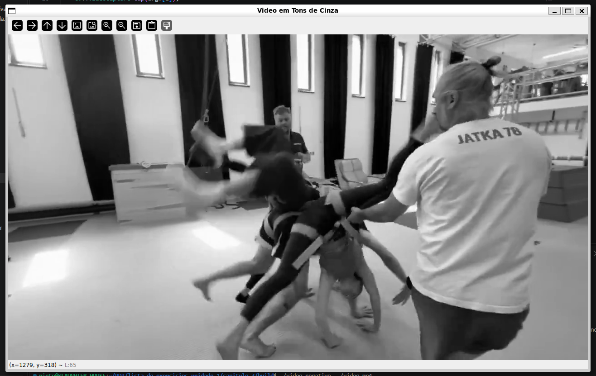
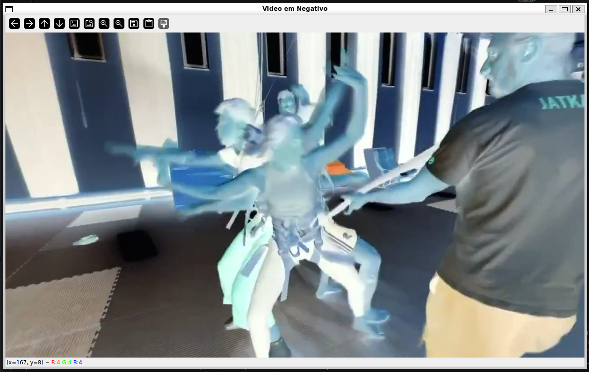
4. Capítulo 4: Visualização de Imagens e Perfis de Intensidade
Neste exercício, analisei o perfil de intensidade ao longo de uma linha e a representação topográfica 3D das imagens sementes1.png e sementes2.png. Com esses gráficos, consegui visualizar na prática como a variação de iluminação do fundo afeta os níveis de cinza e o contraste entre os objetos e o fundo da cena.
#include <iostream>
#include <fstream>
#include <string>
#include <opencv2/opencv.hpp>
using namespace cv;
int main(int argc, char** argv) {
if (argc < 2) {
std::cout << "Uso: ./visualizacao <imagem.png>\n";
return -1;
}
Mat image = imread(argv[1], cv::IMREAD_GRAYSCALE);
if (!image.data) {
std::cout << "erro\n";
return -1;
}
//gera o arquivo da matriz completa (2D/3D)
std::ofstream file("matriz.txt");
for (int j = 0; j < image.rows; j++) {
for (int i = 0; i < image.cols; i++) {
file << (int)(image.at<uchar>(j, i)) << " ";
}
file << "\n";
}
file.close();
//gera o arquivo da linha central (1D)
file.open("line.txt");
for (int i = 0; i < image.cols; i++) {
file << (int)(image.at<uchar>(image.rows / 2, i)) << "\n";
}
file.close();
return 0;
}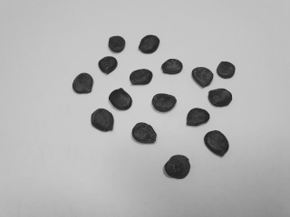
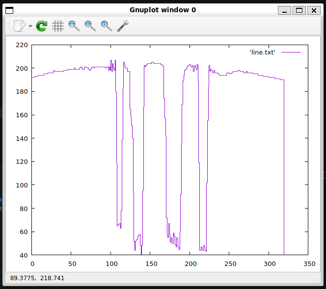
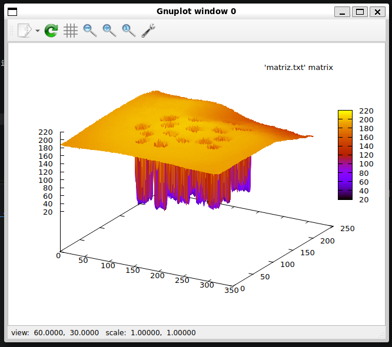
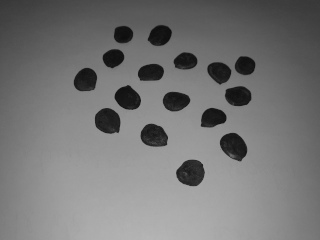
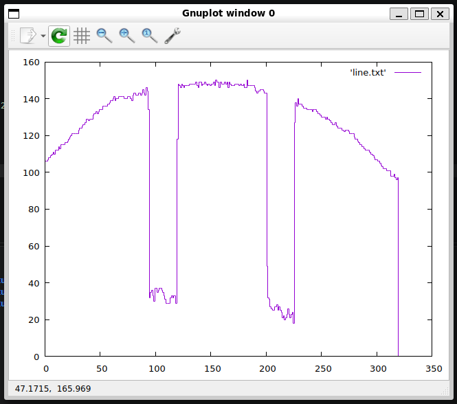
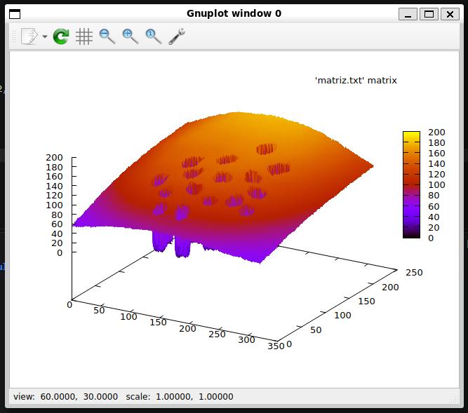
5. Capítulo 5: Serialização de Dados em Ponto Flutuante via FileStorage
Gerei uma imagem contendo períodos de uma função senoidal representada em ponto flutuante (CV_32FC1) e salvei os dados usando cv::FileStorage. Depois, comparei os valores originais em ponto flutuante com a versão normalizada e salva em formato PNG (inteiro de 8 bits), plotando o gráfico do erro de quantização entre as duas representações.
#include <iostream>
#include <opencv2/opencv.hpp>
#include <fstream>
#include <string>
int SIDE = 256;
int PERIODOS = 4; //alterado para 4 conforme o exercício
int main(int argc, char** argv) {
cv::Mat image = cv::Mat::zeros(SIDE, SIDE, CV_32FC1);
//gera a senóide em float
for (int i = 0; i < SIDE; i++) {
for (int j = 0; j < SIDE; j++) {
//amplitude 127, deslocamento 128 para evitar valores negativos
image.at<float>(i, j) = 127 * sin(2 * M_PI * PERIODOS * j / SIDE) + 128;
}
}
//grava a imagem float intocada no YAML
cv::FileStorage fs("senoide-256.yml", cv::FileStorage::WRITE);
fs << "mat" << image;
fs.release();
//converte para 8 bits e grava no PNG
cv::Mat image_png;
cv::normalize(image, image_png, 0, 255, cv::NORM_MINMAX);
image_png.convertTo(image_png, CV_8U);
cv::imwrite("senoide-256.png", image_png);
//leitura dos arquivos para comparação
cv::Mat mat_yaml, mat_png;
//le YAML
fs.open("senoide-256.yml", cv::FileStorage::READ);
fs["mat"] >> mat_yaml;
fs.release();
//le PNG em tons de cinza
mat_png = cv::imread("senoide-256.png", cv::IMREAD_GRAYSCALE);
//compara linha central e gravação das diferenças
std::ofstream file("diferenca.txt");
int linha_central = SIDE / 2;
for (int j = 0; j < SIDE; j++) {
float val_yaml = mat_yaml.at<float>(linha_central, j);
float val_png = (float)mat_png.at<uchar>(linha_central, j);
float diferenca = std::abs(val_yaml - val_png);
file << diferenca << "\n";
}
file.close();
std::cout << "Processamento concluido. Arquivo 'diferenca.txt' gerado na pasta build." << std::endl;
//mostra a imagem na tela (opcional)
cv::imshow("Senoide", image_png);
cv::waitKey();
return 0;
}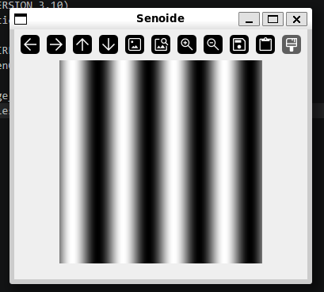
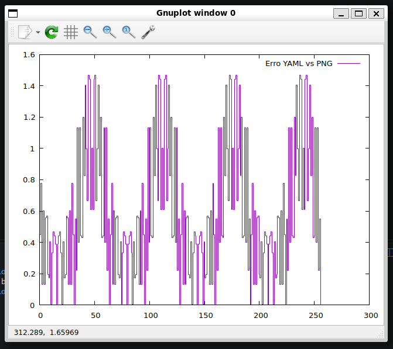
6. Capítulo 6: Mapas de Cores (Pseudocores)
Neste capítulo, testei diferentes paletas de pseudocores nativas do OpenCV através da função cv::applyColorMap (colormaps_padrao.cpp) e também implementei uma tabela de busca (Look-Up Table - LUT) própria (colormap_personalizado.cpp) para mapear os tons de cinza da imagem para faixas de cores personalizadas no espaço RGB.
#include <iostream>
#include <opencv2/opencv.hpp>
#include <vector>
#include <string>
int main(int argc, char** argv) {
cv::Mat image = cv::imread("noturno_icon.jpg", cv::IMREAD_GRAYSCALE);
if (!image.data) {
std::cout << "erro" << std::endl;
return -1;
}
std::vector<int> mapas = {
cv::COLORMAP_AUTUMN,
cv::COLORMAP_BONE,
cv::COLORMAP_WINTER,
cv::COLORMAP_RAINBOW,
cv::COLORMAP_OCEAN
};
std::vector<std::string> nomes = {
"Autumn", "Bone", "Winter", "Rainbow", "Ocean"
};
cv::Mat imagecolor;
for (size_t i = 0; i < mapas.size(); i++) {
cv::applyColorMap(image, imagecolor, mapas[i]);
cv::imshow("Colormap: " + nomes[i], imagecolor);
//salva a imagem automaticamente na pasta
std::string nome_arquivo = "resultado_" + nomes[i] + ".png";
cv::imwrite(nome_arquivo, imagecolor);
std::cout << "A exibir e salvar: " << nome_arquivo << " (Pressione uma tecla para avancar...)" << std::endl;
cv::waitKey(0);
cv::destroyAllWindows();
}
return 0;
}#include <iostream>
#include <opencv2/opencv.hpp>
int main(int argc, char** argv) {
//carrega a imagem em tons de cinza na pasta do capitulo
cv::Mat image = cv::imread("noturno_icon.jpg", cv::IMREAD_GRAYSCALE);
if (image.empty()) {
//fallback caso o executavel seja rodado de dentro da subpasta build
image = cv::imread("../noturno_icon.jpg", cv::IMREAD_GRAYSCALE);
}
if (image.empty()) {
std::cout << "erro" << std::endl;
return -1;
}
//tabela LUT: 256 linhas, 1 coluna e 3 canais (BGR)
cv::Mat lut(256, 1, CV_8UC3);
//preenche a tabela com um gradiente personalizado (tons de roxo)
for (int i = 0; i < 256; i++) {
lut.at<cv::Vec3b>(i, 0)[0] = i; // Canal Azul (B)
lut.at<cv::Vec3b>(i, 0)[1] = 0; // Canal Verde (G)
lut.at<cv::Vec3b>(i, 0)[2] = i; // Canal Vermelho (R)
}
cv::Mat imagecolor;
cv::applyColorMap(image, imagecolor, lut);
//salva e exibe o resultado
cv::imwrite("resultado_Personalizado.png", imagecolor);
cv::imshow("Colormap Personalizado (Roxo)", imagecolor);
cv::waitKey(0);
return 0;
}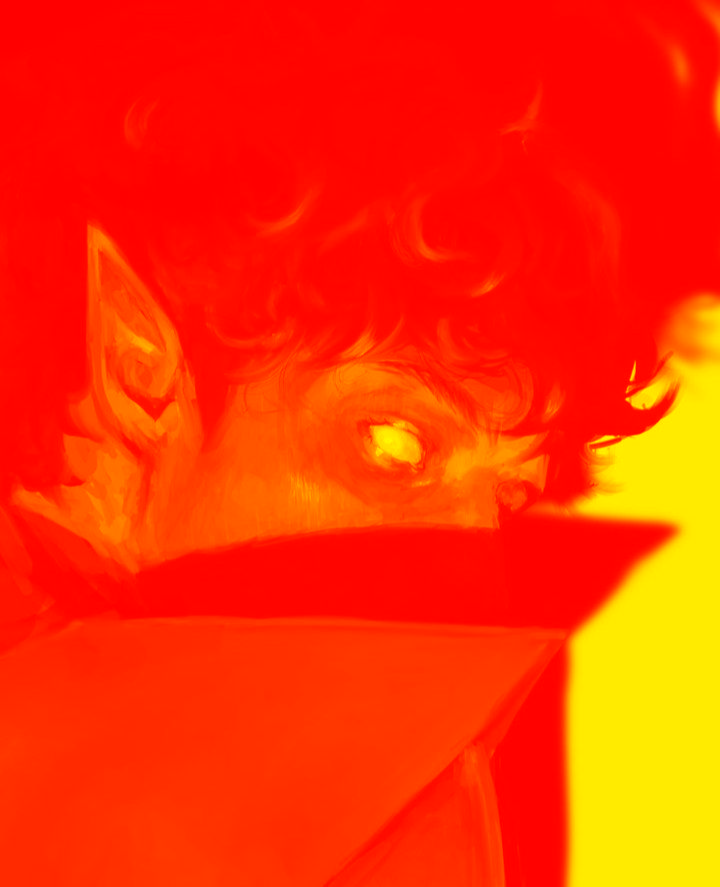
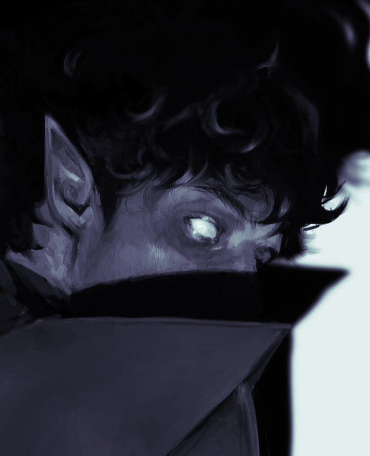
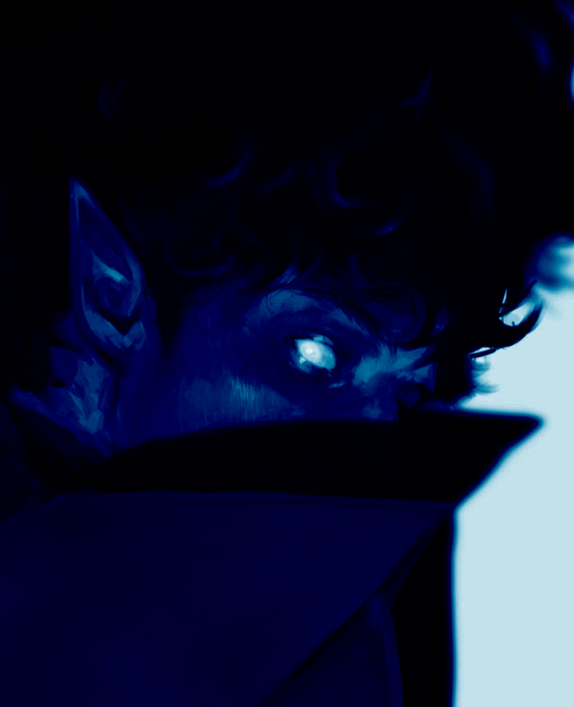
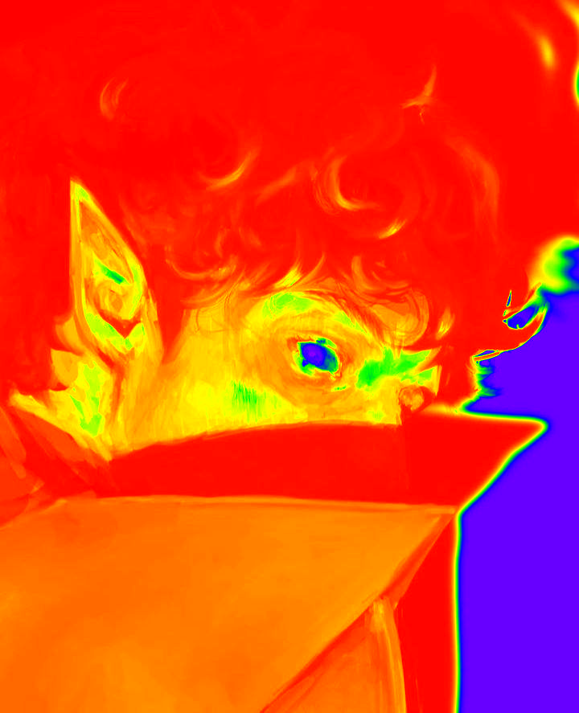
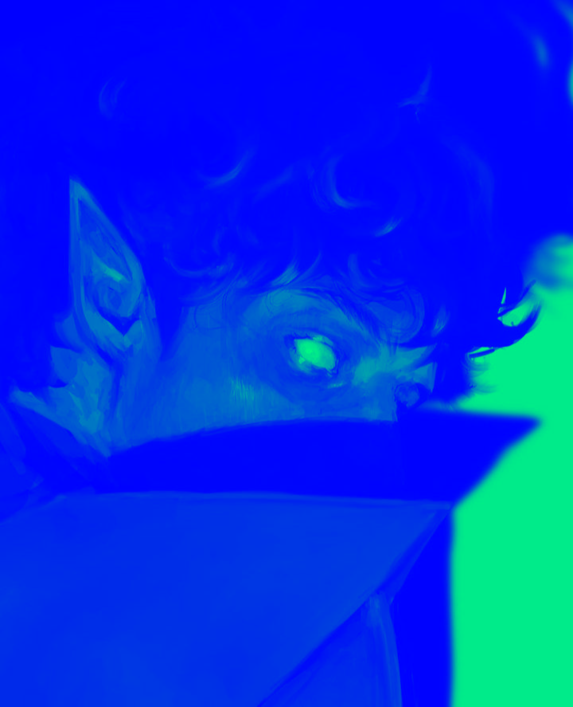
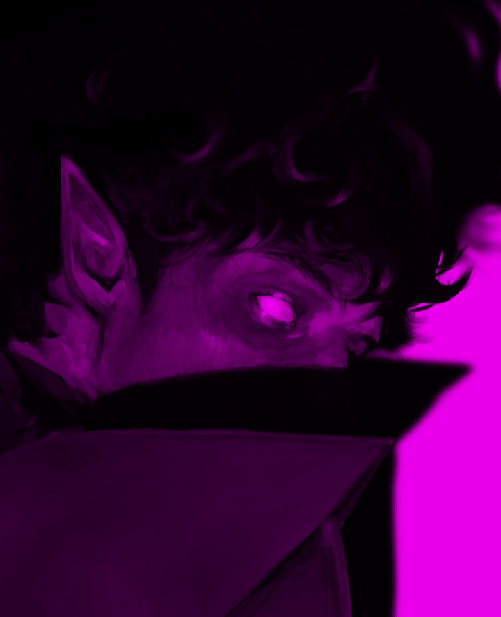
7. Capítulo 7: Espaços de Cores
Converti a imagem de entrada para o espaço de cores HSV, separei os canais e apliquei mapas de cores diretamente sobre o canal de matiz (Hue), testando tanto mapas prontos do OpenCV quanto uma paleta personalizada para destacar variações de tonalidade.
#include <iostream>
#include <opencv2/opencv.hpp>
#include <vector>
#include <string>
int main(int argc, char** argv) {
// Carrega a imagem colorida
cv::Mat image = cv::imread("../noturno_icon.jpg", cv::IMREAD_COLOR);
if (image.empty()) {
std::cout << "erro" << std::endl;
return -1;
}
cv::Mat hsv;
std::vector<cv::Mat> planes;
//converte para HSV e separa os canais (planes[0] = Hue, planes[1] = Saturation, planes[2] = Value)
cv::cvtColor(image, hsv, cv::COLOR_BGR2HSV_FULL);
cv::split(hsv, planes);
std::vector<int> mapas = {
cv::COLORMAP_JET, cv::COLORMAP_HOT, cv::COLORMAP_COOL,
cv::COLORMAP_SPRING, cv::COLORMAP_VIRIDIS
};
std::vector<std::string> nomes = {
"Jet", "Hot", "Cool", "Spring", "Viridis"
};
cv::Mat imagecolor;
for (size_t i = 0; i < mapas.size(); i++) {
//aplica o mapa de cores no canal Hue (planes[0])
cv::applyColorMap(planes[0], imagecolor, mapas[i]);
std::string nome_arquivo = "resultado_Hue_" + nomes[i] + ".png";
cv::imwrite(nome_arquivo, imagecolor); //salva automaticamente
cv::imshow("Hue com Colormap: " + nomes[i], imagecolor);
std::cout << "Salvo: " << nome_arquivo << " (Pressione uma tecla)" << std::endl;
cv::waitKey(0);
cv::destroyAllWindows();
}
return 0;
}#include <iostream>
#include <opencv2/opencv.hpp>
#include <vector>
int main(int argc, char** argv) {
cv::Mat image = cv::imread("../noturno_icon.jpg", cv::IMREAD_COLOR);
if (image.empty()) {
std::cout << "erro" << std::endl;
return -1;
}
cv::Mat hsv;
std::vector<cv::Mat> planes;
cv::cvtColor(image, hsv, cv::COLOR_BGR2HSV_FULL);
cv::split(hsv, planes);
//cria a tabela vertical (256 linhas, 1 coluna) exigida pelo OpenCV 4.10
cv::Mat lut(256, 1, CV_8UC3);
for (int i = 0; i < 256; i++) {
lut.at<cv::Vec3b>(i, 0)[0] = 255 - i; // B: Inverso da intensidade
lut.at<cv::Vec3b>(i, 0)[1] = i; // G: Acompanha a intensidade
lut.at<cv::Vec3b>(i, 0)[2] = 127; // R: Fixo em 127
}
cv::Mat imagecolor;
cv::applyColorMap(planes[0], imagecolor, lut);
cv::imwrite("resultado_Hue_Personalizado.png", imagecolor);
cv::imshow("Hue - Colormap Personalizado", imagecolor);
cv::waitKey(0);
return 0;
}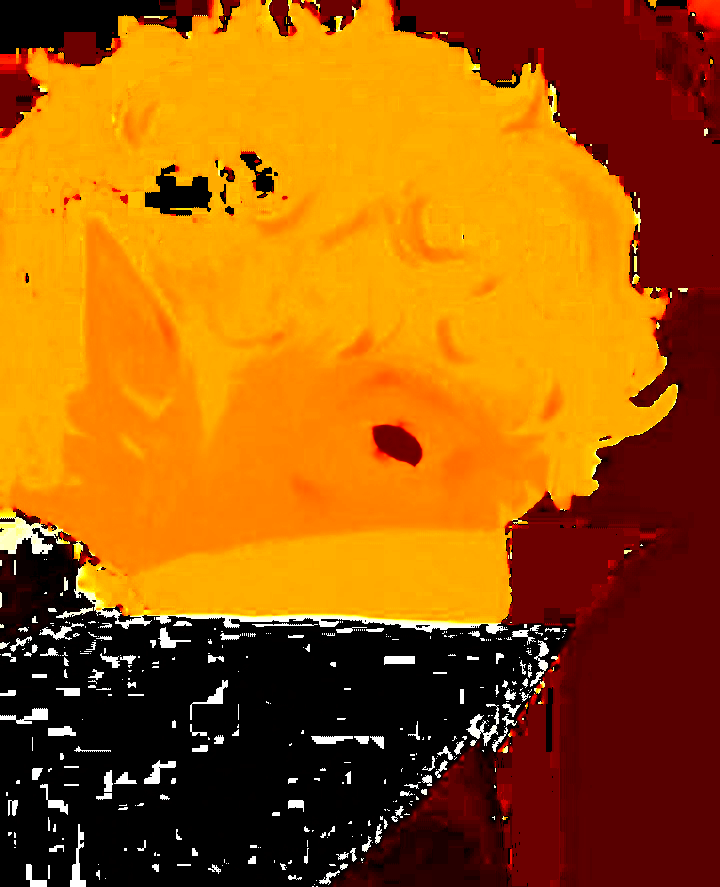
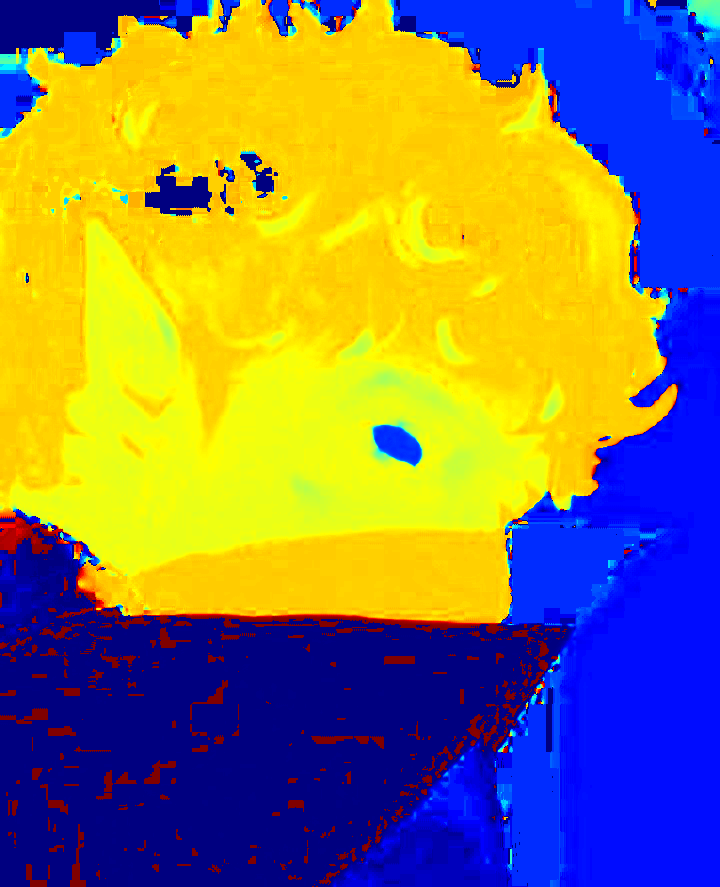
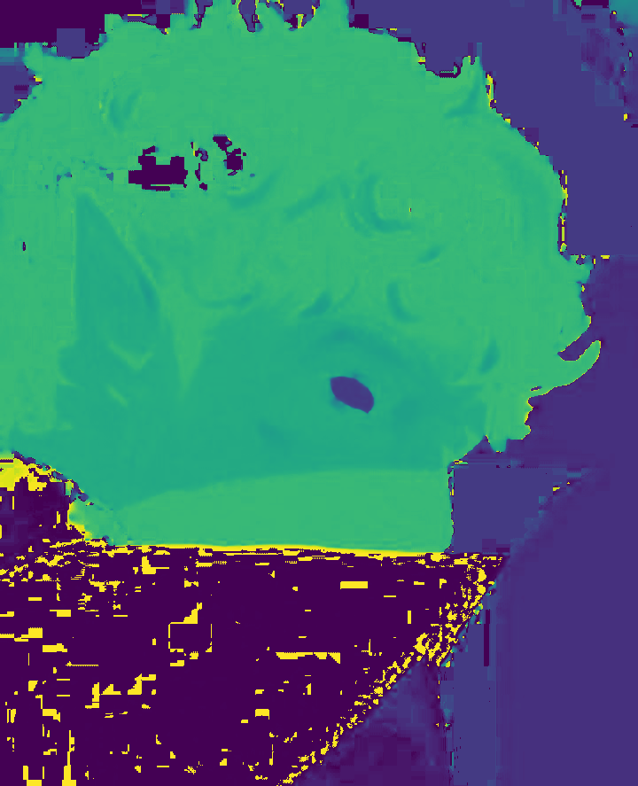
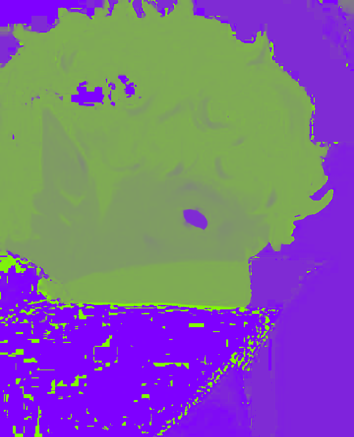
8. Capítulo 8: Seleção Interativa de Pixels
Modifiquei o programa de referência para permitir selecionar a faixa de cores pintando diretamente sobre a imagem original com o mouse. Ao manter o botão esquerdo pressionado, o programa adiciona os pixels sob o pincel à máscara de seleção; com o botão direito pressionado, ele apaga os pixels da máscara. A partir dos pixels pintados, calculei a média e o desvio padrão de cada canal para segmentar as regiões de interesse.
#include <iostream>
#include <opencv2/opencv.hpp>
//variáveis globais para compartilhamento com as funções do mouse e trackbars
cv::Mat original_image, display_image, paint_mask, final_mask;
bool isDrawing = false;
bool isErasing = false;
bool updateStats = false;
cv::Scalar average(128, 128, 128);
cv::Scalar stdev(0, 0, 0);
int rangeR = 0, rangeG = 0, rangeB = 0;
//callbacks vazios apenas para o trackbar funcionar corretamente
void on_trackbar(int, void*) {}
//função que gerencia o "pincel" com o mouse
static void onMouse(int event, int x, int y, int, void*) {
int radius = 10; // Tamanho do pincel
if (event == cv::EVENT_LBUTTONDOWN) {
isDrawing = true;
cv::circle(paint_mask, cv::Point(x, y), radius, cv::Scalar(255), -1);
} else if (event == cv::EVENT_RBUTTONDOWN) {
isErasing = true;
cv::circle(paint_mask, cv::Point(x, y), radius, cv::Scalar(0), -1);
} else if (event == cv::EVENT_LBUTTONUP) {
isDrawing = false;
updateStats = true; //recalcula os status ao soltar o clique
} else if (event == cv::EVENT_RBUTTONUP) {
isErasing = false;
updateStats = true; //recalcula os status ao soltar o clique
} else if (event == cv::EVENT_MOUSEMOVE) {
if (isDrawing) {
cv::circle(paint_mask, cv::Point(x, y), radius, cv::Scalar(255), -1);
} else if (isErasing) {
cv::circle(paint_mask, cv::Point(x, y), radius, cv::Scalar(0), -1);
}
}
}
int main(int argc, const char** argv) {
original_image = cv::imread("noturno_icon.jpg", cv::IMREAD_COLOR);
if (original_image.empty()) {
std::cout << "erro" << std::endl;
return -1;
}
//inicia a máscara de pintura (toda preta)
paint_mask = cv::Mat::zeros(original_image.size(), CV_8UC1);
cv::namedWindow("Image", cv::WINDOW_NORMAL);
cv::namedWindow("Selection", cv::WINDOW_NORMAL);
cv::createTrackbar("R-range", "Image", &rangeR, 255, on_trackbar);
cv::createTrackbar("G-range", "Image", &rangeG, 255, on_trackbar);
cv::createTrackbar("B-range", "Image", &rangeB, 255, on_trackbar);
cv::setMouseCallback("Image", onMouse, 0);
std::cout << "INSTRUCOES" << std::endl;
std::cout << "- Pressione o BOTAO ESQUERDO do mouse para PINTAR e selecionar as cores." << std::endl;
std::cout << "- Pressione o BOTAO DIREITO do mouse para APAGAR." << std::endl;
std::cout << "- Pressione a tecla ESC para SALVAR AUTOMATICAMENTE e sair." << std::endl;
for (;;) {
//cria um feedback visual verde transparente onde o usuário está pintando
cv::Mat overlay = original_image.clone();
overlay.setTo(cv::Scalar(70, 70, 50), paint_mask);
cv::addWeighted(original_image, 0.7, overlay, 0.3, 0, display_image);
//se o usuário soltar o clique do mouse, calcula a média e variância da área pintada
if (updateStats) {
if (cv::countNonZero(paint_mask) > 0) {
//meanStdDev aceita uma máscara para calcular os dados apenas onde está pintado
cv::meanStdDev(original_image, average, stdev, paint_mask);
//atualiza as barras de tolerância (3 * desvio padrão)
rangeB = cv::saturate_cast<int>(3 * stdev[0]);
rangeG = cv::saturate_cast<int>(3 * stdev[1]);
rangeR = cv::saturate_cast<int>(3 * stdev[2]);
cv::setTrackbarPos("B-range", "Image", rangeB);
cv::setTrackbarPos("G-range", "Image", rangeG);
cv::setTrackbarPos("R-range", "Image", rangeR);
}
updateStats = false;
}
//seleciona os pixels na imagem final baseando-se na cor média e na tolerância
cv::inRange(original_image,
average - cv::Scalar(rangeB, rangeG, rangeR),
average + cv::Scalar(rangeB, rangeG, rangeR),
final_mask);
cv::imshow("Image", display_image);
cv::imshow("Selection", final_mask);
char c = cv::waitKey(10);
if (c == 27) { // 27 = Tecla ESC
break;
}
}
//salva as imagens ao sair
cv::imwrite("resultado_pintura.png", display_image);
cv::imwrite("resultado_mascara.png", final_mask);
std::cout << "Arquivos 'resultado_pintura.png' e 'resultado_mascara.png' salvos com sucesso!" << std::endl;
return 0;
}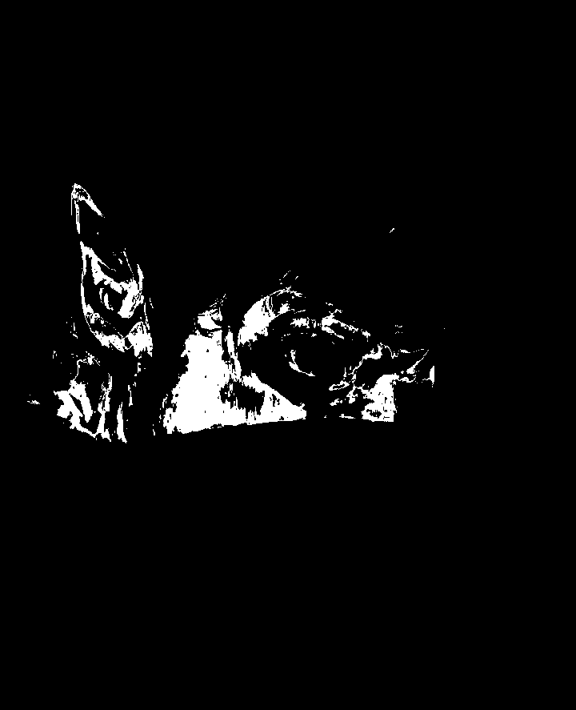
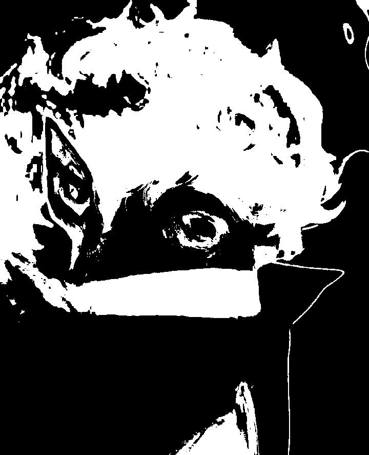
9. Capítulo 9: Combinação de Imagens (Light Painting)
Para criar o efeito de Light Painting, gravei um vídeo curto em um quarto escuro desenhando com a lanterna do celular (light.mp4). No código, extraí todos os quadros do vídeo e testei duas formas de combiná-los: usando a função cv::max e usando a soma direta (+).
Com a função cv::max, o resultado ficou bem nítido, pois ela compara o quadro acumulado com o atual e guarda apenas o pixel mais claro (o rastro da lanterna), mantendo o fundo escuro intacto. Já com a soma aritmética, como o ambiente não tinha iluminação zero absoluta, o pequeno brilho de fundo e o ruído da câmera foram somados quadro a quadro até estourar o limite de 255, deixando a imagem inteira branca.
#include <iostream>
#include <opencv2/opencv.hpp>
int main(int argc, char** argv) {
//abre o vídeo
cv::VideoCapture cap("../light.mp4");
if (!cap.isOpened()) {
std::cout << "erro ao abrir o vídeo" << std::endl;
return -1;
}
cv::Mat frame;
cap >> frame; // Lê o primeiro frame
if (frame.empty()) {
std::cout << "erro" << std::endl;
return -1;
}
//inicia as imagens acumuladoras com o primeiro frame do vídeo
cv::Mat result_max = frame.clone();
cv::Mat result_add = frame.clone();
int frame_count = 1;
//loop para ler o vídeo inteiro
while (true) {
cap >> frame;
if (frame.empty()) break; // Fim do vídeo
//1 Combinação: cv::max
//mantém apenas o pixel mais claro entre o acumulado e o frame atual
result_max = cv::max(result_max, frame);
//2 combinação (Para Comparação): Operador de Soma (+)
//soma as matrizes: vai saturar a imagem se o fundo não for preto
result_add = result_add + frame;
frame_count++;
}
std::cout << "Processamento concluido! Foram lidos " << frame_count << " frames." << std::endl;
//salva as imagens na pasta build
cv::imwrite("resultado_lightpainting_max.png", result_max);
cv::imwrite("resultado_lightpainting_add.png", result_add);
//mostra na tela
cv::namedWindow("Light Painting - MAX", cv::WINDOW_NORMAL);
cv::namedWindow("Light Painting - SOMA", cv::WINDOW_NORMAL);
cv::imshow("Light Painting - MAX", result_max);
cv::imshow("Light Painting - SOMA", result_add);
std::cout << "Arquivos salvos com sucesso! Pressione qualquer tecla na janela da imagem para sair." << std::endl;
cv::waitKey(0);
return 0;
}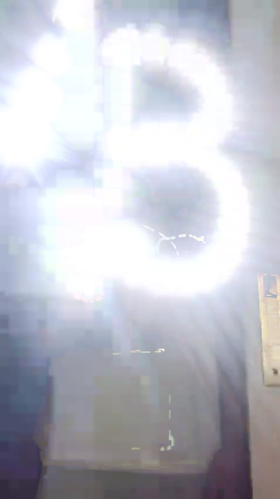
10. Capítulo 10: Decomposição de Imagens em Planos de Bits (Esteganografia)
Neste exercício, implementei um decodificador para recuperar a imagem oculta dentro do arquivo desafio-esteganografia.png. Como a esteganografia guarda a informação secreta nos 3 bits menos significativos (LSB) de cada canal de cor da imagem portadora, fiz um deslocamento de 5 bits para a esquerda (valCodificada << 5). Essa operação descarta os 5 bits da pintura original e move os 3 bits escondidos para as posições mais significativas (MSB), tornando a imagem oculta visível novamente.
#include <iostream>
#include <opencv2/opencv.hpp>
int main(int argc, char** argv) {
if (argc != 2) {
std::cout << "uso: ./decodificador <imagem_codificada.png>" << std::endl;
return -1;
}
//carrega a imagem que tem o segredo
cv::Mat imagemCodificada = cv::imread(argv[1], cv::IMREAD_COLOR);
if (imagemCodificada.empty()) {
std::cout << "Erro ao abrir a imagem!" << std::endl;
return -1;
}
//cria uma matriz vazia para guardar a imagem revelada
cv::Mat imagemRecuperada = cv::Mat::zeros(imagemCodificada.size(), imagemCodificada.type());
int nbits = 3;
//percorre todos os píxeis da imagem
for (int i = 0; i < imagemCodificada.rows; i++) {
for (int j = 0; j < imagemCodificada.cols; j++) {
cv::Vec3b valCodificada = imagemCodificada.at<cv::Vec3b>(i, j);
cv::Vec3b valRecuperada;
//pego o byte original e uso um "Shift Left" (<<) de 5 posições (8 - 3).
//isso leva os 3 bits escondidos do fundo para o topo do byte,
//e descarta automaticamente a imagem portadora que estava no topo.
valRecuperada[0] = valCodificada[0] << (8 - nbits);
valRecuperada[1] = valCodificada[1] << (8 - nbits);
valRecuperada[2] = valCodificada[2] << (8 - nbits);
imagemRecuperada.at<cv::Vec3b>(i, j) = valRecuperada;
}
}
//salva o resultado na pasta
cv::imwrite("imagem_revelada.png", imagemRecuperada);
//mostra o resultado
cv::imshow("Segredo Revelado", imagemRecuperada);
std::cout << "Imagem revelada com sucesso e salva como 'imagem_revelada.png'!" << std::endl;
cv::waitKey(0);
return 0;
}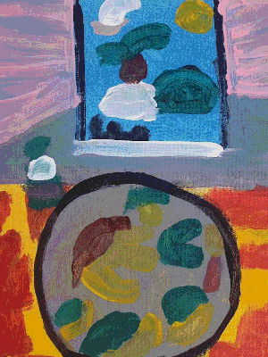
11. Capítulo 11: Preenchendo Regiões (Rotulação e Contagem)
No algoritmo original de rotulação, caso existam mais de 255 objetos na cena, a variável de contagem sofre overflow porque uma imagem uchar (8 bits) só armazena valores de 0 a 255. Para resolver isso em cenários com centenas de objetos, a solução é usar uma matriz de rótulos com maior profundidade, como CV_32SC1 (inteiros de 32 bits).
Para contar separadamente as bolhas com e sem buracos e ignorar as que tocam as bordas da imagem bolhas.png, estruturei o código em quatro passos:
1. Percorri a primeira e a última linha e coluna da imagem; sempre que encontrei um pixel branco (255), apliquei um floodFill com 0 para apagar a bolha da borda.
2. Mudei a cor do fundo da imagem para 1 usando floodFill a partir do ponto (0,0). Assim, o fundo passou a valer 1, as bolhas 255 e apenas os buracos internos continuaram com valor 0.
3. Rotulei todas as bolhas restantes com valores sequenciais a partir de 2.
4. Varri a matriz procurando pixels com valor 0 (buracos). Ao achar um buraco, olhei o pixel imediatamente à esquerda para identificar o rótulo da bolha a que ele pertence, marquei essa bolha como tendo furo em um vetor booleano e preenchi o buraco com 1 para não contá-lo novamente caso a mesma bolha tivesse mais de um furo.
#include <iostream>
#include <opencv2/opencv.hpp>
#include <vector>
int main(int argc, char** argv) {
cv::Mat image = cv::imread("bolhas.png", cv::IMREAD_GRAYSCALE);
if (!image.data) {
std::cout << "erro\n";
return (-1);
}
int width = image.cols;
int height = image.rows;
//varre a primeira e última linha
for (int i = 0; i < width; i++) {
if (image.at<uchar>(0, i) == 255)
cv::floodFill(image, cv::Point(i, 0), 0);
if (image.at<uchar>(height - 1, i) == 255)
cv::floodFill(image, cv::Point(i, height - 1), 0);
}
//varre a primeira e última coluna
for (int i = 0; i < height; i++) {
if (image.at<uchar>(i, 0) == 255)
cv::floodFill(image, cv::Point(0, i), 0);
if (image.at<uchar>(i, width - 1) == 255)
cv::floodFill(image, cv::Point(width - 1, i), 0);
}
//pinta o fundo da imagem (comecando do ponto 0,0) com a cor 1
//o fundo fica = 1, bolhas = 255, e os buracos internos ficam isolados mantendo o valor 0
cv::floodFill(image, cv::Point(0, 0), 1);
int label = 2; //inicia a rotulação no 2 (0 e 1 já estão em uso)
for (int i = 0; i < height; i++) {
for (int j = 0; j < width; j++) {
if (image.at<uchar>(i, j) == 255) {
cv::floodFill(image, cv::Point(j, i), label);
label++;
}
}
}
//array de booleanos para rastrear quais bolhas tem furos
std::vector<bool> tem_furo(label, false);
for (int i = 0; i < height; i++) {
for (int j = 0; j < width; j++) {
// Se encontrar um pixel 0, é um buraco!
if (image.at<uchar>(i, j) == 0) {
//pixel a esquerda (j-1) obrigatoriamente pertence a bolha que envolve o buraco
int bolha_pai = image.at<uchar>(i, j - 1);
tem_furo[bolha_pai] = true;
//preenche o buraco com a cor de fundo (1) para não voltar a contar ele (trata bolhas com >1 furo)
cv::floodFill(image, cv::Point(j, i), 1);
}
}
}
int com_furo = 0;
int sem_furo = 0;
//começa do rótulo 2 até ao último criado
for (int i = 2; i < label; i++) {
if (tem_furo[i]) com_furo++;
else sem_furo++;
}
std::cout << "==== RESULTADOS DA CONTAGEM ====" << std::endl;
std::cout << "Bolhas com furo: " << com_furo << std::endl;
std::cout << "Bolhas sem furo: " << sem_furo << std::endl;
std::cout << "Total de bolhas válidas: " << com_furo + sem_furo << std::endl;
//ajusta o brilho visual para o resultado final não ficar totalmente escuro
cv::Mat realce;
image.convertTo(realce, CV_32F);
cv::normalize(realce, realce, 0, 255, cv::NORM_MINMAX);
realce.convertTo(realce, CV_8U);
cv::imwrite("resultado_labeling.png", realce);
cv::imshow("Bolhas Filtradas", realce);
std::cout << "\nImagem guardada como 'resultado_labeling.png'. Pressione uma tecla para sair..." << std::endl;
cv::waitKey(0);
return 0;
}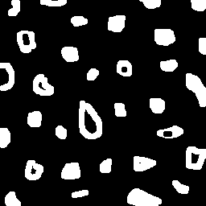
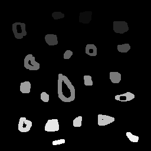
12. Capítulo 12: Manipulação de Histogramas
Implementei dois programas baseados em histogramas. No equalize.cpp, converti cada quadro para tons de cinza e apliquei a função cv::equalizeHist, o que espalhou melhor os níveis de intensidade e realçou detalhes que estavam muito escuros no vídeo original.
No motiondetector.cpp, calculei o histograma normalizado do quadro atual e comparei com o histograma do quadro imediatamente anterior usando a distância de Bhattacharyya (cv::HISTCMP_BHATTACHARYYA). Quando a diferença entre os dois histogramas passa de 0.05 (como acontece quando a luz se move rapidamente na cena), o programa exibe um aviso de movimento detectado na tela.
|
Nota sobre o uso da câmera: Como meu computador não possui webcam física, tentei utilizar o celular como câmera através do DroidCam. Porém, como o ambiente WSL não reconheceu o dispositivo de vídeo nem o stream HTTP por falta de plugins do GStreamer, programei o código para tentar abrir a câmera inicialmente e, caso nenhuma câmera seja detectada, carregar automaticamente um vídeo gravado ( |
#include <iostream>
#include <opencv2/opencv.hpp>
int main(int argc, char** argv) {
//tenta abrir a webcam padrao do computador (indice 0)
cv::VideoCapture cap(0);
//caso nao detecte webcam usa o video gravado como fallback
if (!cap.isOpened()) {
std::cout << "Webcam nao detectada. Abrindo o arquivo de video 'light.mp4'..." << std::endl;
cap.open("light.mp4");
if (!cap.isOpened()) {
cap.open("../capitulo_9/light.mp4");
}
if (!cap.isOpened()) {
std::cout << "erro" << std::endl;
return -1;
}
}
cv::Mat frame, gray, equalized, combined;
std::cout << "Pressione ESC na janela do video para salvar e sair." << std::endl;
while (true) {
cap >> frame;
if (frame.empty()) {
//reinicia o video caso chegue ao fim
cap.set(cv::CAP_PROP_POS_FRAMES, 0);
continue;
}
//converte para tons de cinza e equaliza o histograma
cv::cvtColor(frame, gray, cv::COLOR_BGR2GRAY);
cv::equalizeHist(gray, equalized);
//junta a imagem original e a equalizada lado a lado
cv::hconcat(gray, equalized, combined);
cv::imshow("Original (Esquerda) vs Equalizada (Direita)", combined);
if (cv::waitKey(30) == 27) break; // Sai ao pressionar ESC
}
cv::imwrite("resultado_equalize.png", combined);
std::cout << "Imagem 'resultado_equalize.png' salva com sucesso!" << std::endl;
return 0;
}#include <iostream>
#include <opencv2/opencv.hpp>
int main(int argc, char** argv) {
// Tenta abrir a webcam padrao do computador (indice 0)
cv::VideoCapture cap(0);
// Caso nao detecte webcam, usa o video gravado como fallback
if (!cap.isOpened()) {
std::cout << "Webcam nao detectada. Abrindo o arquivo de video 'light.mp4'..." << std::endl;
cap.open("light.mp4");
if (!cap.isOpened()) {
cap.open("../capitulo_9/light.mp4");
}
if (!cap.isOpened()) {
std::cout << "erro ao abrir a webcam ou video" << std::endl;
return -1;
}
}
cv::Mat frame, gray, hist_curr, hist_prev;
int nbins = 64;
float range[] = {0, 256};
const float *histrange = { range };
bool uniform = true;
bool accumulate = false;
std::cout << "Pressione ESC na janela do video para salvar e sair." << std::endl;
while (true) {
cap >> frame;
if (frame.empty()) {
cap.set(cv::CAP_PROP_POS_FRAMES, 0);
continue;
}
//calcula e normaliza o histograma do quadro atual em tons de cinza
cv::cvtColor(frame, gray, cv::COLOR_BGR2GRAY);
cv::calcHist(&gray, 1, 0, cv::Mat(), hist_curr, 1, &nbins, &histrange, uniform, accumulate);
cv::normalize(hist_curr, hist_curr, 0, 1, cv::NORM_MINMAX, -1, cv::Mat());
if (!hist_prev.empty()) {
//compara o histograma atual com o anterior usando a distancia de Bhattacharyya
double diferenca = cv::compareHist(hist_prev, hist_curr, cv::HISTCMP_BHATTACHARYYA);
//dispara o alarme visual se a variacao ultrapassar o limiar
if (diferenca > 0.05) {
cv::putText(frame, "MOVIMENTO DETECTADO!", cv::Point(50, 50),
cv::FONT_HERSHEY_SIMPLEX, 1, cv::Scalar(0, 0, 255), 3);
cv::circle(frame, cv::Point(30, 40), 10, cv::Scalar(0, 0, 255), -1);
}
}
//guarda o histograma atual para comparar no proximo quadro
hist_prev = hist_curr.clone();
cv::imshow("Detector de Movimento (Pressione ESC para sair)", frame);
if (cv::waitKey(30) == 27) break;
}
cv::imwrite("resultado_motion.png", frame);
std::cout << "Imagem 'resultado_motion.png' salva com sucesso!" << std::endl;
return 0;
}13. Capítulo 13: Registro de Imagens
Modifiquei o programa de registro para que a escolha dos quatro cantos do visor do voltímetro fosse feita clicando diretamente na imagem com o mouse, através da função cv::setMouseCallback. A cada clique, o programa desenha um ponto vermelho de confirmação na tela. Ao registrar o quarto ponto, ele calcula automaticamente a largura e a altura ideais, gera a matriz de transformação com cv::getPerspectiveTransform e aplica o cv::warpPerspective para alinhar o mostrador de frente.
#include <iostream>
#include <opencv2/opencv.hpp>
#include <vector>
//variáveis globais para compartilhar com o callback do mouse
cv::Mat original_image, display_image;
std::vector<cv::Point2f> srcPoints;
//função chamada sempre que o rato interage com a janela
void onMouse(int event, int x, int y, int flags, void* userdata) {
if (event == cv::EVENT_LBUTTONDOWN) {
//processa se ainda não tivermos os 4 pontos
if (srcPoints.size() < 4) {
srcPoints.push_back(cv::Point2f(x, y));
//desenha um pequeno círculo vermelho onde o usuário clicou
cv::circle(display_image, cv::Point(x, y), 4, cv::Scalar(0, 0, 255), -1);
cv::imshow("Original - Clique nos 4 cantos", display_image);
//quando o 4 ponto for clicado calcula a transformação
if (srcPoints.size() == 4) {
std::cout << "\n4 pontos registados, calcular perspetiva" << std::endl;
//calcula a largura (maior distância horizontal)
float largura = cv::max(cv::norm(srcPoints[0] - srcPoints[1]),
cv::norm(srcPoints[3] - srcPoints[2]));
//calcula a altura (maior distância vertical)
float altura = cv::max(cv::norm(srcPoints[1] - srcPoints[2]),
cv::norm(srcPoints[0] - srcPoints[3]));
//define os pontos de destino (um retângulo perfeito)
std::vector<cv::Point2f> dstPoints;
dstPoints.push_back(cv::Point2f(0, 0)); //superior esquerdo
dstPoints.push_back(cv::Point2f(largura - 1, 0)); //superior direito
dstPoints.push_back(cv::Point2f(largura - 1, altura - 1));//inferior direito
dstPoints.push_back(cv::Point2f(0, altura - 1)); //inferior esquerdo
//matriz de transformação
cv::Mat perspectiveMatrix = cv::getPerspectiveTransform(srcPoints, dstPoints);
//distorção na imagem
cv::Mat correctedImage;
cv::warpPerspective(original_image, correctedImage, perspectiveMatrix, cv::Size(largura, altura));
//ostra e salva o resultado final
cv::imshow("Imagem Corrigida", correctedImage);
cv::imwrite("resultado_voltimetro.png", correctedImage);
std::cout << "Imagem corrigida salva como 'resultado_voltimetro.png' na pasta build." << std::endl;
std::cout << "Pressione ESC para sair." << std::endl;
}
}
}
}
int main(int argc, char** argv) {
original_image = cv::imread("../voltimetro.png");
if (original_image.empty()) {
std::cout << "erro ao carregar a imagem" << std::endl;
return -1;
}
display_image = original_image.clone();
cv::namedWindow("Original - Clique nos 4 cantos", cv::WINDOW_AUTOSIZE);
cv::setMouseCallback("Original - Clique nos 4 cantos", onMouse, NULL);
std::cout << "MODO DE USO" << std::endl;
std::cout << "Clique nos 4 cantos do visor nesta ordem:" << std::endl;
std::cout << "1. Canto Superior Esquerdo" << std::endl;
std::cout << "2. Canto Superior Direito" << std::endl;
std::cout << "3. Canto Inferior Direito" << std::endl;
std::cout << "4. Canto Inferior Esquerdo" << std::endl;
cv::imshow("Original - Clique nos 4 cantos", display_image);
while (true) {
if (cv::waitKey(30) == 27) break; //sai ao pressionar ESC
}
return 0;
}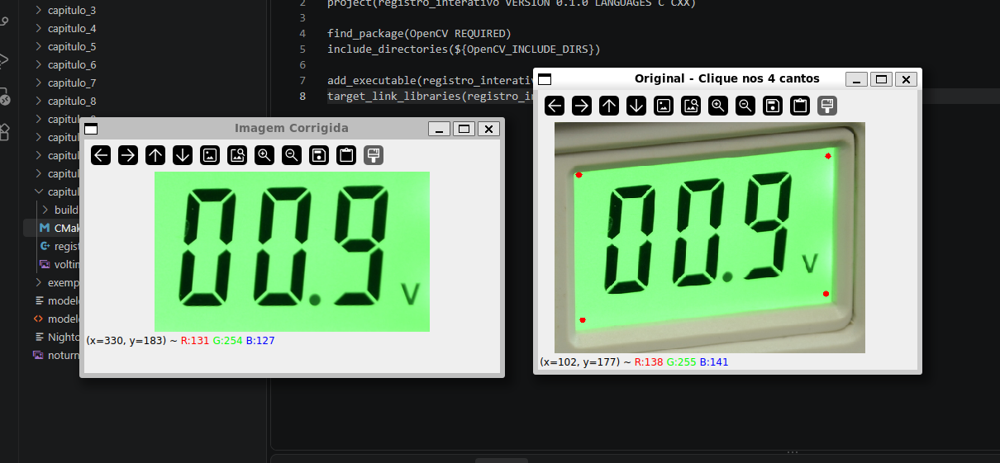
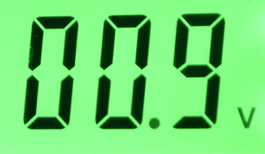
14. Capítulo 14: Filtragem no Domínio Espacial I (Convolução e Focus Stacking)
Na primeira parte (convolucao2.cpp), apliquei o filtro da média com máscaras de tamanhos \$3 \times 3\$, \$11 \times 11\$ e \$21 \times 21\$. Comparando as três saídas, fica evidente que quanto maior a máscara, mais forte é o borramento, pois o valor de cada pixel passa a ser a média de uma vizinhança muito maior, suavizando todas as bordas e detalhes finos.
Na segunda parte (depthoffield.cpp), implementei a correção de profundidade de campo no vídeo vasos720p.mp4. Para descobrir quais partes estavam em foco em cada quadro, apliquei um filtro Laplaciano \$3 \times 3\$ na imagem em tons de cinza. Como regiões focadas têm bordas bem definidas, elas geram valores altos no Laplaciano. Mantive uma matriz guardando o maior valor absoluto de Laplaciano já visto em cada posição \$(x, y)\$ e, sempre que um novo quadro superava esse valor, copiei o pixel colorido correspondente para a imagem de saída. A técnica funcionou muito bem porque a câmera e os vasos ficam parados durante o vídeo, mudando apenas a distância focal da lente.
#include <iostream>
#include <opencv2/opencv.hpp>
int main(int argc, char** argv) {
cv::Mat image = cv::imread("noturno_icon.jpg", cv::IMREAD_GRAYSCALE);
if (image.empty()) {
std::cout << "erro ao abrir a imagem" << std::endl;
return -1;
}
cv::Mat img32f, res3, res11, res21;
image.convertTo(img32f, CV_32F); //converte para float para cálculos matemáticos precisos
//cria as máscaras de media (matriz preenchida por 1's, dividida pela área total)
cv::Mat mask3 = cv::Mat::ones(3, 3, CV_32F) / 9.0f;
cv::Mat mask11 = cv::Mat::ones(11, 11, CV_32F) / 121.0f;
cv::Mat mask21 = cv::Mat::ones(21, 21, CV_32F) / 441.0f;
//aplica os filtros
cv::filter2D(img32f, res3, img32f.depth(), mask3, cv::Point(-1, -1), 0, cv::BORDER_REPLICATE);
cv::filter2D(img32f, res11, img32f.depth(), mask11, cv::Point(-1, -1), 0, cv::BORDER_REPLICATE);
cv::filter2D(img32f, res21, img32f.depth(), mask21, cv::Point(-1, -1), 0, cv::BORDER_REPLICATE);
//retorna ao formato original (8 bits)
res3.convertTo(res3, CV_8U);
res11.convertTo(res11, CV_8U);
res21.convertTo(res21, CV_8U);
//guarda os resultados
cv::imwrite("media_03x03.png", res3);
cv::imwrite("media_11x11.png", res11);
cv::imwrite("media_21x21.png", res21);
std::cout << "Imagens guardadas! Verifique os ficheiros media_...png" << std::endl;
//mostra as janelas
cv::imshow("Filtro 3x3", res3);
cv::imshow("Filtro 11x11", res11);
cv::imshow("Filtro 21x21", res21);
cv::waitKey(0);
return 0;
}#include <iostream>
#include <opencv2/opencv.hpp>
int main(int argc, char** argv) {
cv::VideoCapture cap("vasos720p.mp4");
if (!cap.isOpened()) {
std::cout << "erro ao abrir o video" << std::endl;
return -1;
}
cv::Mat frame, gray, lap, abs_lap;
cv::Mat max_lap, output_image;
//mascara do filtro laplaciano
float laplacian_data[] = {0, -1, 0, -1, 4, -1, 0, -1, 0};
cv::Mat mask(3, 3, CV_32F, laplacian_data);
bool first_frame = true;
int frame_count = 0;
std::cout << "Processando video quadro a quadro" << std::endl;
while (true) {
cap >> frame;
if (frame.empty()) break; //fim do vídeo
if (first_frame) {
//inicia matriz de máximos com zeros
max_lap = cv::Mat::zeros(frame.rows, frame.cols, CV_32F);
output_image = frame.clone();
first_frame = false;
}
//converte para cinza e depois para float para aplicar o filtro
cv::cvtColor(frame, gray, cv::COLOR_BGR2GRAY);
gray.convertTo(gray, CV_32F);
//aplica o filtro laplaciano
cv::filter2D(gray, lap, gray.depth(), mask, cv::Point(1, 1), 0, cv::BORDER_REPLICATE);
//nitidez é medida pela magnitude do laplaciano (valor absoluto)
abs_lap = cv::abs(lap);
//compara pixel a pixel
for (int i = 0; i < frame.rows; i++) {
for (int j = 0; j < frame.cols; j++) {
//se pixel atual for mais nítido do que o registado anteriormente
if (abs_lap.at<float>(i, j) > max_lap.at<float>(i, j)) {
//atualiza o recorde de nitidez
max_lap.at<float>(i, j) = abs_lap.at<float>(i, j);
//copia o pixel colorido do quadro atual para a imagem final
output_image.at<cv::Vec3b>(i, j) = frame.at<cv::Vec3b>(i, j);
}
}
}
frame_count++;
}
std::cout << "Processamento concluido! Lidos " << frame_count << " frames." << std::endl;
cv::imwrite("resultado_foco.png", output_image);
cv::imshow("Imagem Final Totalmente Focada", output_image);
std::cout << "Imagem salva como 'resultado_foco.png'. Pressione qualquer tecla para sair." << std::endl;
cv::waitKey(0);
return 0;
}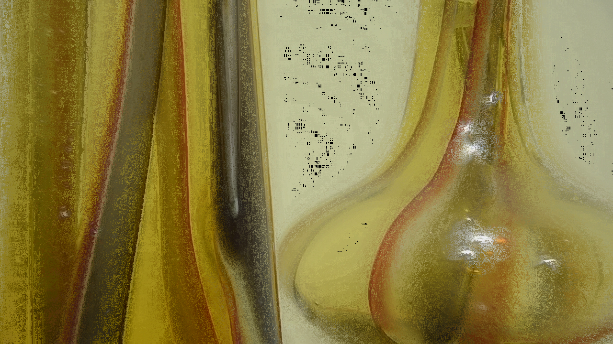
15. Capítulo 15: Filtragem no Domínio Espacial II (Tilt-Shift)
No programa tiltshift.cpp, criei três barras deslizantes (trackbars) para controlar a posição vertical do centro em foco, a altura dessa faixa e a força do decaimento. Para fazer uma transição suave entre a imagem original nítida e a imagem borrada (com filtro da média \$21 \times 21\$), calculei o peso \$\alpha\$ de cada linha usando a equação das tangentes hiperbólicas:
\$\alpha(x) = \frac{1}{2} \left( \tanh\frac{x - l_1}{d} - \tanh\frac{x - l_2}{d} \right)\$
Já no programa tiltshiftvideo.cpp, apliquei esse mesmo efeito de foco seletivo aos quadros do vídeo vasos720p.mp4. Para dar a impressão de miniatura em stop motion, descartei 3 a cada 4 quadros lidos (frame_count % 4 != 0), gravando apenas o quarto quadro processado no arquivo de vídeo final.
#include <iostream>
#include <cmath>
#include <opencv2/opencv.hpp>
cv::Mat image, blurred, result;
//valores iniciais (em porcentagem)
int center_slider = 50;
int height_slider = 30;
int decay_slider = 10;
void applyTiltShift(int, void*) {
//evita divisão por zero no decaimento
int d = std::max(decay_slider, 1);
//converte as porcentagens dos trackbars para as posições reais em pixels
int l1 = (center_slider * image.rows / 100) - (height_slider * image.rows / 200);
int l2 = (center_slider * image.rows / 100) + (height_slider * image.rows / 200);
//processa linha a linha combinando a imagem original e a borrada
for (int i = 0; i < image.rows; i++) {
//função de ponderação baseada na tangente hiperbólica
double alpha = 0.5 * (tanh((i - l1) / (double)d) - tanh((i - l2) / (double)d));
//garante que o alpha fique entre 0 e 1
alpha = std::max(0.0, std::min(1.0, alpha));
//mistura a linha original com a linha borrada de acordo com o peso alpha
cv::addWeighted(image.row(i), alpha, blurred.row(i), 1.0 - alpha, 0.0, result.row(i));
}
cv::imshow("Efeito Tilt-Shift", result);
}
int main(int argc, char** argv) {
image = cv::imread("noturno_icon.jpg");
if (image.empty()) {
std::cout << "Erro ao abrir a imagem 'noturno_icon.jpg'." << std::endl;
return -1;
}
result = image.clone();
//cria a versão fortemente borrada da imagem (filtro da média grande)
cv::blur(image, blurred, cv::Size(21, 21));
cv::namedWindow("Efeito Tilt-Shift", cv::WINDOW_AUTOSIZE);
//cria as 3 barras de controle exigidas pelo exercício
cv::createTrackbar("Centro Vertical %", "Efeito Tilt-Shift", ¢er_slider, 100, applyTiltShift);
cv::createTrackbar("Altura do Foco %", "Efeito Tilt-Shift", &height_slider, 100, applyTiltShift);
cv::createTrackbar("Decaimento (Suavidade)", "Efeito Tilt-Shift", &decay_slider, 50, applyTiltShift);
//primeira chamada para gerar a imagem inicial
applyTiltShift(0, 0);
std::cout << "Ajuste os controles deslizantes." << std::endl;
std::cout << "Pressione ESC para salvar o resultado e sair." << std::endl;
while (true) {
if (cv::waitKey(30) == 27) break;
}
cv::imwrite("resultado_tiltshift.png", result);
std::cout << "Arquivo 'resultado_tiltshift.png' salvo com sucesso!" << std::endl;
return 0;
}#include <iostream>
#include <cmath>
#include <opencv2/opencv.hpp>
int main(int argc, char** argv) {
cv::VideoCapture cap("vasos720p.mp4");
if (!cap.isOpened()) {
std::cout << "erro ao abrir o video" << std::endl;
return -1;
}
//le as propriedades do vídeo original
int width = cap.get(cv::CAP_PROP_FRAME_WIDTH);
int height = cap.get(cv::CAP_PROP_FRAME_HEIGHT);
double fps = cap.get(cv::CAP_PROP_FPS);
//configura a gravação do novo vídeo (.avi com codec MJPG é seguro no WSL)
cv::VideoWriter writer("miniature_video.avi", cv::VideoWriter::fourcc('M', 'J', 'P', 'G'),
fps, cv::Size(width, height));
cv::Mat frame, blurred, result;
result.create(height, width, CV_8UC3);
//configuração fixa do Tilt-Shift para o vídeo
int center = 50; //50% (Centro da tela)
int focus_height = 30; //30% da altura em foco
int decay = 15; //suavidade
int l1 = (center * height / 100) - (focus_height * height / 200);
int l2 = (center * height / 100) + (focus_height * height / 200);
//pré-calcula os valores de alpha para cada linha
std::vector<double> alpha_weights(height);
for (int i = 0; i < height; i++) {
double a = 0.5 * (tanh((i - l1) / (double)decay) - tanh((i - l2) / (double)decay));
alpha_weights[i] = std::max(0.0, std::min(1.0, a));
}
int frame_count = 0;
int frames_escritos = 0;
std::cout << "Processar o video com efeito Stop Motion e Tilt-Shift..." << std::endl;
while (true) {
cap >> frame;
if (frame.empty()) break;
frame_count++;
//pula 3 quadros e processa o 4 para simular "Stop Motion"
if (frame_count % 4 != 0) continue;
//aplica o borramento forte
cv::blur(frame, blurred, cv::Size(21, 21));
//aplica as máscaras alpha calculadas anteriormente
for (int i = 0; i < height; i++) {
cv::addWeighted(frame.row(i), alpha_weights[i],
blurred.row(i), 1.0 - alpha_weights[i], 0.0, result.row(i));
}
writer.write(result);
frames_escritos++;
}
std::cout << "Processamento concluido!" << std::endl;
std::cout << "O video final foi guardado como 'miniature_video.avi' (" << frames_escritos << " quadros)." << std::endl;
return 0;
}Arquivo de vídeo original em AVI gerado pelo programa: miniature_video.avi